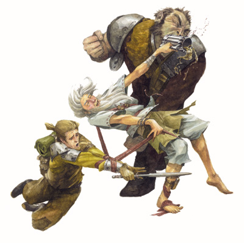

|
醉拳大师（Ｄｒｕｎｋｅｎ Ｍａｓｔｅｒ）

打算学武的学生通常会面对一大堆令人混乱的武术流派，每个都有自己的拥护者和诽谤者，但是很少有流派像醉拳（Ｄｒｕｎｋｅｎ Ｂｏｘｉｎｇ）这样不同寻常，或者说有争议。通过喝醉般的摇晃和蹒跚的脚步，醉拳师可以避过许多攻击。同样，他们令人困惑的攻击经常使对手无从防御。另外，当他们真的喝酒之后，醉拳大师可以使出具有惊人力量和勇敢的武技专长。
这并没有使他们从其他的武术流派获得什么尊重，因为醉拳需要使用者付出一定的代价。醉拳大师在战斗之后依然保持兴奋状态达数小时，并且经常可以发现他们在酒馆里处于一种半睡的状态下，无条理的喃喃自语。这公然违背其他流派的修习规则。但是醉拳的竞争对手都必须不得不时刻警觉－他们从不会知道什么时候酒吧里的喝醉的蠢货仅仅是个无害的地痞，什么时候那是个醉拳大师。
僧侣构成了醉拳流的骨干力量，也许因为他们成为醉拳大师会使得他们原来的流派或修道院丢了脸，但是一场醉拳的精彩展示有时可以使以前流派的批评家们闭上嘴巴。其他职业极少成为醉拳大师，尽管学生中一直流传着一个北方来的野蛮人成为了一个出色醉拳大师的故事。
预期的学生们会被醉拳大师暗中观察研究，然后被邀请参观醉拳力量的演示，如果这个学生表现出学习这门技能的强力愿望，一伙醉拳大师就会带着他或她从一家酒馆到另一家酒馆，嘈杂地痛饮，不停地制造麻烦，传输醉拳的初步秘诀，那些在这场狂欢中幸存下的人就可以成为新的醉拳大师了。
ＮＰＣ醉拳大师通常在酒馆和酒吧里被发现，在那里他们极少挑起争端，但是会帮助在酒馆争吵中被打败的人。大多数醉拳大师都保持低调，尽管有一些是很有名的－－或声名狼藉的－－因为他们在喝醉时做过的事情。
生命骰数：ｄ８。
职业需求
要具备醉拳大师的资格，人物必须符合以下全部条件。
技能：“滚翻”８级
专长：闪避，强韧加强，精通徒手击打（或武僧的徒手击打能力。）。
特殊要求：极速连击能力；反射闪避能力；必须被现有的醉拳大师选中，并且必须和他们一起在狂欢夜幸存下来，而不被监禁，毒害或格外地局促不安。
本职技能
醉拳大师的本职技能如下（括号中为该技能的关键属性）：“平衡”（敏捷），“唬骗”（魅力），“攀爬”（力量），“手艺”（智力），“脱逃”（敏捷），“躲藏”（敏捷），“跳跃”（力量），“聆听”（感知），“潜行”（敏捷），“表演”（魅力），“专业”（感知），“游泳”（力量）和“滚翻”（敏捷）。
升级可得到的技能点数：４＋智力调整值。
表２－８：醉拳大师
等级 ＢＡＢ 强韧 反射 意志 特殊
１ ＋０ ＋２ ＋２ ＋０ 恶饮，临时武器
２ ＋１ ＋３ ＋３ ＋０ 回转空突
３ ＋２ ＋３ ＋３ ＋１ 醉管卷翁
４ ＋３ ＋４ ＋４ ＋１ 额外防御等级＋１，精通临时武器
５ ＋３ ＋４ ＋４ ＋１ 高等临时武器
６ ＋４ ＋５ ＋５ ＋２ 精通佯攻
７ ＋５ ＋５ ＋５ ＋２ 精通擒抱
８ ＋６ ＋６ ＋６ ＋２ 医疗目的
９ ＋６ ＋６ ＋６ ＋３ 额外防御等级＋２，螺旋冲锋，进阶临时武器
１０ ＋７ ＋７ ＋７ ＋３ 轰栏炎炮
职业特性
下述均为醉拳大师进阶职业的职业特性：
擅长武器和防具：醉拳大师不擅长任何武器与防具。
恶饮（Ｄｒｉｎｋ Ｌｉｋｅ ａ Ｄｅｍｏｎ）（特异能力）：醉拳大师的身体对酒精的处理能力与常人不同。他可以喝一大杯麦酒（ａｌｅ），一瓶白酒（ｗｉｎｅ）或者相应数量的更烈的酒，这视作一个移动等效动作。战斗中醉拳大师喝的每瓶或杯酒会减少感知和智力各两点，但是会加强两点力量或体质（由人物选择）。醉拳大师有效的恶饮量等同于其职业等级。无论惩罚还是加值，效果的持续时间都等于醉拳大师的职业等级＋３。
临时武器（Ｉｍｐｒｏｖｉｓｅｄ Ｗｅａｐｏｎ）（特异能力）：酒瓶和大酒杯是醉拳大师最称手的临时武器，还有，身边的家具、农具或是任何东西只要能拿在手里，都可以用来打击对手。醉拳大师的临时武器可以使其徒手击打的伤害骰额外加上１ｄ４。大多数的临时武器可以造成钝击伤害，但有些（碎酒瓶等等）也可以造成穿刺或挥砍伤害。当醉拳大师在使用临时武器的攻击检定中直接投出了１，此武器则会支离破碎，再也无法使用。
回转空突（Ｓｔａｇｇｅｒ）（特异能力）：通过绊摔、蹒跚和摇晃，达到２级的醉拳大师可以向对手发动一次令其惊奇的冲刺攻击。这个能力的好处有两方面：首先此次冲锋不必在一条直线上，并且依然可以以两倍速度移动。第二，醉拳大师在开始冲锋时可以进行一次翻滚检定（ＤＣ１５），如果成功，则在通过威胁区域时不会引发借机攻击。
醉管卷翁（Ｓｗａｙｉｎｇ Ｗａｉｓｔ）（特异能力）：到了３级，醉拳大师懂得了如何在攻击中前后迂回，左右摇摆，使其难以被击中。在醉拳大师的行动轮中，当对抗由其选定的某位对手时，他的ＡＣ将获得＋２闪避奖励。
额外防御等级（ＡＣ Ｂｏｎｕｓ）（特异能力）：到了４级，醉拳大师将会在其防护等级上获得＋１的加值。这个加值到９级时可升至＋２。
精通临时武器（Ｉｍｐｒｏｖｅｄ Ｉｍｐｒｏｖｉｓｅｄ Ｗｅａｐｏｎ）（特异能力）：达到４级的醉拳大师可以使用长的临时武器（如梯子）作为长型武器，根据其长度来决定可以攻击的范围，并且有很多突出物的临时武器（如椅子）可以在解除武器检定时获得＋２奖励。最后，大的而且具有宽阔扁平表面的物品（如桌子）还可以倒放来变成临时的塔盾。
高等临时武器（Ｇｅａｔｅｒ Ｉｍｐｒｏｖｉｓｅｄ Ｗｅａｐｏｎ）（特异能力）：到了５级，醉拳大师使用临时武器的的额外伤害骰将由原来的１ｄ４变为１ｄ８。
精通佯攻（Ｉｍｐｒｏｖｅ Ｆｅｉｎｔ）（特异能力）：达到６级时，即使没有满足获得该专长的先决条件，醉拳大师也可以获得精通佯攻专长作为额外专长。
精通擒抱（Ｉｍｐｒｏｖｅ Ｇｒａｐｐｌｅ）（特异能力）：达到８级时，即使没有满足获得该专长的先决条件，醉拳大师也可以获得精通擒抱专长作为额外专长。
医疗目的（Ｆｏｒ Ｍｅｄｉｃｉｎａｌ Ｐｕｒｐｏｓｅｄ）（类法术能力）：到了８级，醉拳大师获得此能力，可以在体内将他刚喝下的一单位酒类饮料转化为一单位治愈中伤药剂，仿佛他喝下的是这种药剂一样。要使用此能力，醉拳大师必须处于酒精的影响下（见上文：恶饮）。当醉拳大师将酒精转化为药剂后，他的属性值会发生变化（智力和感知＋２，力量或体质－２），如同酒精作用的持续时间已经过去。此能力每天最多使用三次。医疗目的是一个标准动作，并不会引发借机攻击。
螺旋冲锋（Ｃｏｒｋｓｃｒｅｗ Ｒｕｓｈ）（特异能力）：达到９级的醉拳大师可以做出这种高难机动动作：向前扑击，在半空扭曲身体再用头冲撞对手。当醉拳大师进行冲刺攻击时，除了造成正常伤害外还会自动发起一次冲撞攻击（不会引发借机攻击）。若冲撞成功，则对手必须进行一次意志检定（ＤＣ为１０＋醉拳大师职业等级＋醉拳大师感知调整值），失败则陷入震慑状态。然而，若冲撞失败，醉拳大师会在对手面前俯卧着地。
进阶临时武器（Ｓｕｐｅｒｉｏｒ Ｉｍｐｒｏｖｉｓｅｄ Ｗｅａｐｏｎ）（特异能力）：到了９级，醉拳大师使用临时武器的的额外伤害骰将由原来的１ｄ８变为１ｄ１２。
轰栏炎炮（Ｂｒｅａｔｈ ｏｆ Ｆｌａｍｅ）（类法术能力）：达到１０级的醉拳大师可以点燃体内的一些酒精，并且向外喷出。轰栏炎炮对所有２０尺锥形范围内的生物造成３ｄ１２的火焰伤害，在此范围内的生物可以通过一次反射豁免（ＤＣ为１０＋醉拳大师职业等级＋醉拳大师体质调整值），通过则伤害减半。每次使用轰栏炎炮会消耗醉拳大师体内一单位酒，因此会减少属性的处罚和奖励（由恶饮引发的）。
兼职纪录（Ｍｕｌｔｉｃｌａｓｓ Ｎｏｔｅ）：成为醉拳大师的武僧可以继续在武僧职业上晋级。
醉拳大师样本：
麒麟 口台老四
Ｋｉｒｉｎ Ｋｏｔｅｌｌｏｓ
人类
５ 武僧／８ 醉拳大师
挑战级别：１３
中型人形生物
ＨＤ：（５ｄ８＋５）＋（８ｄ８＋８）
ＨＰ：７２
先攻调整：＋２
速度：４０英尺
ＡＣ：２０ 接触１７，措手不及１７
基础攻击值：＋９
擒抱：＋１７
攻击：＋１４近战（１ｄ１０＋４／１９－２０，徒手击打）或＋１４近战（１ｄ６＋７，蚺蛇令牌）或＋１２远程（１ｄ８／１９－２０，＋１轻型十字弓）
全力攻击：＋１４／＋９近战（１ｄ１０＋４／１９－２０，徒手击打）或＋１３／＋１３／＋８近战（１ｄ１０＋４／１９－２０，徒手击打）或＋１３／＋８近战（１ｄ６＋５，蚺蛇令牌）或＋１３近战（１ｄ６＋３，蚺蛇令牌）或＋１２远程（１ｄ８／１９－２０，＋１轻型十字弓）
ＳＡ：极速连击；斗气击（魔法）。
ＳＱ：恶饮；反射闪避；百病不侵；轻身坠２０尺；心如止水。
阵营：守序善良。
豁免：强韧＋１５，反射＋１４，意志＋１０
属性：力量：１９，敏捷：１４，体质：１２，智力：１０，感知：１４，魅力：８。
技能和专长：平衡＋２０，唬骗＋７，攀爬＋２０，交涉＋１，威吓＋１，跳跃＋２６，翻滚＋２０；战斗反射，闪避，强韧加强，精通重击（徒手击打），精通佯攻，精通擒抱，灵活移动，跳跃攻击，震慑拳，专攻武器（徒手击打）。
极速连击（特异能力）：使出极速连击时，麒麟在全力攻击轮中多出一次额外攻击，该次攻击加值等于其最高徒手攻击或武僧专用武器加值，但该轮所有攻击的攻击加值受到－１减值。此减值维持一轮，所以若在下次动作前进行机会攻击，也会受影响。如果只使用一个单镰、双节棍、或破魔椎进行极速连击，麒麟可以选择用该武器或徒手进行该次额外攻击；如果双手都持有以上武器，则以其中一个作一般攻击（可能多次），另一个作急速连击的额外攻击（只有一次）。以上两种状况中，副手攻击的伤害加值都不会降低。
斗气击（超自然能力）：麒麟的徒手击打视为如同魔法武器，能够伤害到有伤害减免能力的怪物。
恶饮（特异能力）：战斗中麒麟喝的每瓶或杯酒会减少感知和智力各两点，但是会加强两点力量或体质。效果的持续时间为１１轮。
反射闪避（特异能力）：有些攻击效果若通过反射检定仍会造成一半伤害，此时麒麟若通过反射检定则完全不会受伤。
医疗目的（类法术能力）：麒麟可以在体内将他刚喝下的一单位酒类饮料转化为一单位治愈中伤药剂。此能力每天最多使用三次。
临时武器（特异能力）：麒麟可以几乎任何能拿在手里的东西作为临时武器用来打击对手。每种临时武器可以造成１ｄ６的额外伤害（伤害类型与武器形状有关）。麒麟使用的长的临时武器可以作为长型武器，有很多突出物的临时武器可以在解除武器检定时获得＋２奖励。
百病不侵（特异能力）：麒麟对所有疾病免疫，除了魔法造成的疾病外。
轻身坠（特异能力）：当可以够得到墙壁时，麒麟可以利用身旁的墙壁减缓落下的速度。计算麒麟从高处落下的伤害时，高度－２０尺。
回转空突（特异能力）：麒麟在冲锋时不必在一条直线上，而且他在开始冲锋时可以进行翻滚以免在通过威胁区域时会引发借机攻击。
心如止水：麒麟对附魔系法术的豁免检定有＋２加值。
醉管卷翁（特异能力）：在麒麟的行动轮中，当对抗由其选定的某位对手时，他的ＡＣ将获得＋２闪避奖励。
物品：蚺蛇令牌；＋１轻型十字弓；食人魔巨力手套＋２；防护之戒＋１；抗力斗蓬＋２；防御护腕＋３；美愿药水（ｐｏｔｉｏｎ ｏｆ ｇｏｏｄ ｈｏｐｅ）；４瓶酒；２０枝矢。 |